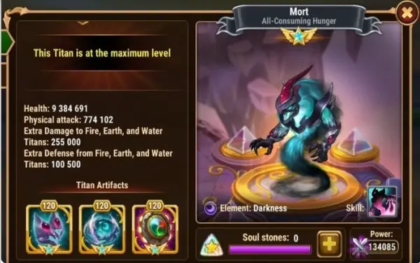

Guia do Titã Mort Hero Wars Mobile
- Por: Alexandre Domingos. .
Atributos Principais
| Posição: | Linha de Trás |
| Função: | Suporte |
| Elemento Principal: | Escuridão |
| Como Obter Pedras de Alma: | Eventos, Esfera de Invocação |
Tier List 2024
| Tier List do Titã: | A+ |
| Tier List da Dungeon: | A+ |
Dominando Mort: Um Guia para Dominar com o Titã da Escuridão em Hero Wars
Introdução:
Mort, o formidável Titã da Escuridão, emergiu como um elemento transformador nas batalhas da Aliança Hero Wars. Com suas habilidades poderosas, ele introduz novas dinâmicas nas guerras PvP, desafiando os jogadores a estrategizar efetivamente. Neste tutorial, vamos aprofundar as habilidades de Mort, focando especialmente em sua habilidade Shadow Rampage, e fornecer insights sobre como utilizar seu poder a seu favor.
Compreendendo o Shadow Rampage de Mort:
A habilidade definidora de Mort, Shadow Rampage, direciona o Titã inimigo com o maior ataque físico, impondo uma maldição que redireciona temporariamente uma parte de sua vida e ataque físico para todos os titãs escuros aliados. Além disso, ela estende esse efeito ao aliado mais próximo de qualquer outro elemento alinhado com Mort.
Analisando as Estatísticas de Ataque Físico dos Titãs:
Para otimizar o uso do Shadow Rampage de Mort, é crucial compreender as estatísticas de ataque físico de vários titãs em Hero Wars. Abaixo está uma tabela atualizada ilustrando as estatísticas totais de ataque físico dos titãs proeminentes:
| Titã | Ataque Físico Total |
|---|---|
| Ignis | 965.634 |
| Keros | 888.053 |
| Sylva | 855.584 |
| Amon | 811.672 |
| Tenebris | 766.900 |
| Araji | 758.963 |
| Nova | 739.190 |
| Iyari | 729.289 |
| Solaris | 714.817 |
| Mairi | 689.745 |
| Hyperion | 669.973 |
| Avalon | 610.656 |
| Eden | 577.201 |
| Moloch | 518.807 |
| Sigurd | 438.401 |
| Angus | 326.445 |
Da tabela, é evidente que titãs como Ignis, Keros e Sylva possuem ataques físicos substanciais, tornando-os alvos principais para o Shadow Rampage de Mort. Por outro lado, titãs de tanque e suporte como Moloch e Angus têm estatísticas de ataque físico mais baixas, tornando-os menos vulneráveis.
Formulando Estratégias com Mort:
- Seleção de Alvo: Priorize amaldiçoar titãs com alto ataque físico, especialmente aqueles comumente encontrados em equipes oponentes, como Ignis e Keros.
- Posicionamento de Aliado: Capitalize na capacidade de Mort de estender a maldição ao aliado mais próximo de qualquer elemento. Posicione Mort estrategicamente para maximizar o impacto nas equipes inimigas, especialmente visando aliados de alto risco como Araji.
- Composição da Equipe: Construa sua equipe em torno das capacidades de Mort, integrando outros titãs escuros para amplificar os benefícios do Shadow Rampage. Considere heróis complementares para aprimorar a sinergia e a eficácia no combate.
- Ativação Oportuna: Cronometre o Shadow Rampage de Mort para obter o máximo impacto, sincronizando-o com momentos cruciais nas batalhas para virar o jogo a seu favor. Coordene-se com sua equipe para liberar todo o seu potencial nos momentos oportunos.
Essas estratégias servem como um mapa para desbloquear o potencial de Mort, capacitando os jogadores a empunhar o Titã da Escuridão com precisão e habilidade. Prepare-se para abraçar as sombras e reinar supremo em Hero Wars!
Pontos Positivos e Negativos de Mort
Pontos Positivos
- Reduz vida e ataque físico
- Enfraquece o Titã inimigo com maior ataque físico
- Transfere vida e ataque físico de inimigos para aliados
- Sinergia com Keros
Pontos Negativos
- Amaldiçoa apenas um titã inimigo por vez
- Precisa carregar energia para usar Fúria Sombria
Prioridades de Evolução de Mort
Estratégias para Evolução dos Artefatos de Mort
No arsenal dos artefatos de Mort, é estrategicamente vantajoso priorizar o aprimoramento de certos artefatos para maximizar sua eficácia no campo de batalha. Comece alocando recursos para aprimorar o artefato Selo do Equilíbrio, pois isso não apenas aumentará a saúde geral de Mort, mas também aumentará sua habilidade de ataque físico, tornando-o mais resiliente e formidável em situações de combate.
Após o aprimoramento do Selo do Equilíbrio, concentre-se em atualizar o artefato de arma. Esse aprimoramento específico não apenas beneficia Mort individualmente, amplificando suas capacidades de ataque físico, mas também estende seus benefícios a toda a equipe, amplificando assim o poder ofensivo coletivo de sua formação. Ao fortalecer o ataque físico de Mort, você garante que ele se torne uma força ainda mais potente, capaz de causar danos substanciais aos adversários e mudar o curso da batalha a seu favor.
Por fim, mas não menos importante, priorize o aprimoramento do artefato Coroa da Escuridão. Este aprimoramento do artefato desempenha um papel fundamental em fortalecer as defesas de Mort e aumentar suas capacidades ofensivas especificamente contra titãs alinhados com os elementos fogo, terra e água. Ao aumentar a resistência e a produção de danos contra esses adversários elementares, Mort se torna um adversário formidável capaz de resistir a ataques e infligir ataques decisivos até mesmo aos oponentes mais resilientes.
Em resumo, ao atualizar meticulosamente os artefatos de Mort na ordem prescrita - começando pelo Selo do Equilíbrio, seguido pelo artefato de arma e culminando com o Coroa da Escuridão - você garante que ele alcance o desempenho máximo no campo de batalha, maximizando assim suas chances de emergir vitorioso em batalhas e conquistar os desafios que estão por vir.
| Prioridade | Artefatos |
|---|---|
| 1ª | Selo do Equilíbrio |
| 2ª | Braçadeira de de Nephtis |
| 3ª | Coroa da Escuridão |
Visuais
Quando se trata de skins para Mort, priorizar a aquisição e o aprimoramento das mesmas pode impactar significativamente seu desempenho no campo de batalha. Até o momento, Mort está equipado apenas com a skin padrão, que se concentra em aprimorar seus atributos de ataque físico.
No entanto, a aquisição estratégica e a utilização de skins adicionais podem proporcionar uma infinidade de benefícios, que vão desde o aprimoramento das capacidades defensivas de Mort até a amplificação de sua destreza ofensiva. Ao priorizar skins que complementam os pontos fortes de Mort e compensam suas fraquezas, você pode adaptar suas habilidades para se adequarem a diferentes cenários de combate e otimizar sua contribuição para sua equipe.
Conforme você avança no jogo, certifique-se de ficar de olho em oportunidades para adquirir novas skins para Mort por meio de eventos, promoções ou outras atividades no jogo. Ao diversificar a coleção de skins de Mort e selecionar estrategicamente quais skins priorizar, você pode desbloquear novas dimensões de poder e versatilidade, elevando Mort de um guerreiro formidável para uma força imparável no campo de batalha.
Em resumo, embora Mort possua apenas a skin padrão no momento, o potencial para aprimorar suas habilidades por meio de skins adicionais é vasto. Ao priorizar estrategicamente skins que se alinhem ao seu estilo de jogo e objetivos estratégicos, você pode liberar o potencial máximo de Mort e liderar sua equipe para a vitória em Hero Wars.
| Prioridade | Estatística | Visual |
|---|---|---|
| 1ª | Ataque Físico +196800 | Visual Padrão |
| 2º | Ataque Físico +196800 | Visual Biomecânico |
| 3º | Vida +2627975 | Visual Primordial |

Mort em Batalhas
Forte Contra
- Ignis, Keros, Sylva, Vulcan, Amon, Araji
Mort é forte contra titãs com alto ataque físico nas estatísticas. Cada vez que Mort usar sua habilidade especial irá focar o titã inimigo com maior estatística de ataque físico, reduzindo o ataque e sua vida deles, e irá canalizar essa redução para seus aliados.
Titã Mort Counters
- Mairi, Nova, Hyperião, Iyari, Éden, Avalon
Mort é fraco contra titãs com menos ataque físico nas estatísticas, como Éden e Hiperião. Mairi será seu principal counter reduzindo seu ataque físico em 40%, dessa forma, ele canalizara menos vida e ataque físico. Nova também é um bom counter principalmente se jogar no manual, por atordoar inimigos de linha de fundo, impedindo que Mort use sua Ultimate.
Combinações de Equipe para Mort em Hero Wars
| Combinação de Equipe |
|---|
| Mort, Hyperion, Eden, Araji, Sigurd |
| Mort, Hyperion, Eden, Araji, Angus |
| Mort, Hyperion, Eden, Araji, Moloch |
| Mort, Ignis, Hyperion, Araji, Moloch |
| Mort, Amon, Hyperion, Iyari, Sigurd |
| Mort, Hyperion, Iyari, Nova, Angus |
| Keros, Mort, Hyperion, Araji, Angus |
| Keros, Mort, Hyperion, Araji, Sigurd |
| Keros, Mort, Hyperion, Eden, Sigurd |
| Keros, Mort, Eden, Araji, Sigurd |
Conclusão do Guia do Mort
Mort emerge como uma força formidável nas batalhas da Aliança em Hero Wars, introduzindo novas camadas de estratégia e desafio. Ao compreender suas habilidades, analisar estatísticas de titãs e formular estratégias eficazes, os jogadores podem aproveitar o poder de Mort para dominar as guerras PvP. Domine Mort e lidere sua aliança para a vitória no campo de batalha em constante evolução de Hero Wars.
 Éden
Éden Keros
Keros Nova
Nova Solaris
Solaris